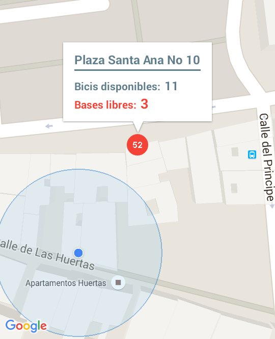

Nuestra aplicacion brinda la posibilidad de elegir entre varias opciones acerca del lugar exacto dónde se pueden alquilar bicicletas para disfrutar de un paseo por la ciudad de una manera diferente a la usual, económica y sobre todo muy fácil. Solo necesitarás introducir en la aplicación la dirección en la que te encuentras y ésta te proporcionará los lugares más cercanos a tu ubicación donde hay bicicletas disponibles para ser alquiladas, de este modo sabrás a dónde dirigirte sin perder tiempo recorriendo diversos puntos de la ciudad.
Además, si utilizar tu propia bicicleta, puedes conocer el aparcabicis más cercano a ti. Así como el más cercano a una ubicación, como una estación de metro.
